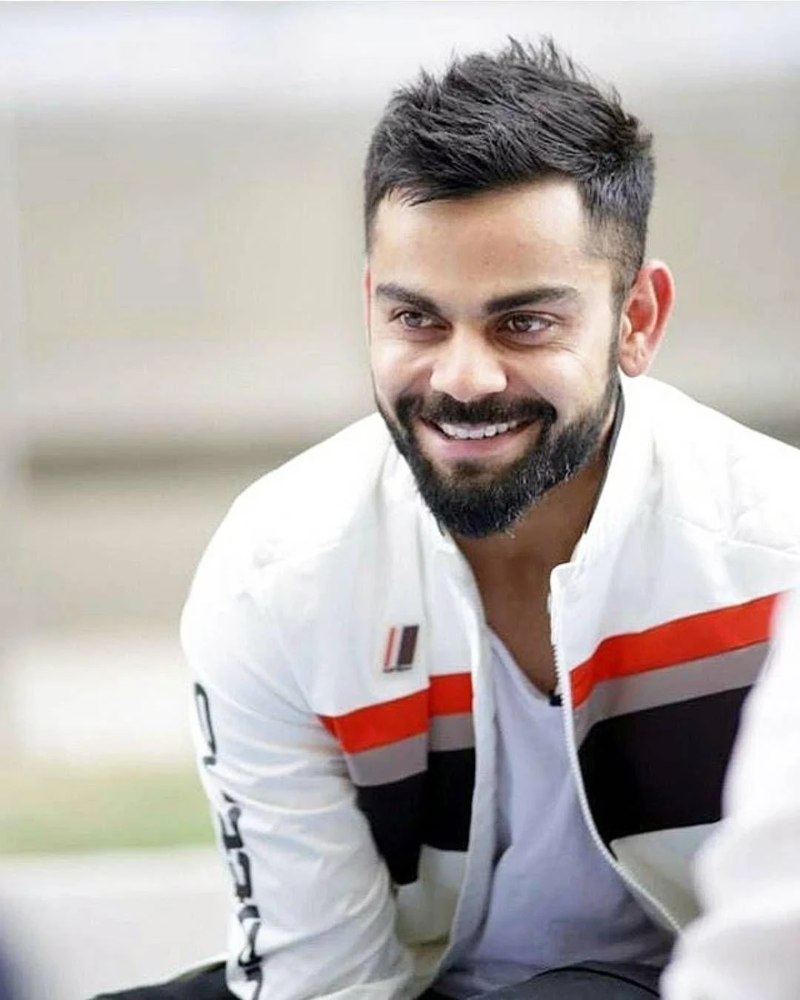

Pawan Kalyan, widely known as "Power Star" by his fans, is a prominent
Indian actor, politician, and film producer, primarily known for his work
in Telugu cinema. Born on September 2, 1971, in Bapatla, Andhra Pradesh,
he made his acting debut in 1996 but rose to stardom with the success of
Tholi Prema (1998). His distinct style, charismatic screen presence, and
ability to blend action, drama, and comedy have earned him a massive fan
following. Known for his roles in hits like Gabbar Singh (2012),
Attarintiki Daredi (2013), and Vakeel Saab (2021), Pawan Kalyan has become
one of the most bankable stars in Telugu cinema. Apart from his film
career, he ventured into politics by founding the Janasena Party in 2014,
aiming to bring change to the political landscape of Andhra Pradesh and
Telangana. Though his political journey has had ups and downs, he
continues to hold significant influence both as an actor and a leader.
Pawan Kalyan’s loyal fan base, known for their passionate support, reveres
him not just for his films but for his vision of societal change and his
outspoken views on various issues.

VIRAT KOHLI
Virat Kohli is one of the most successful and widely recognized
cricketers in the world, known for his aggressive batting, leadership
qualities, and exceptional skill across all formats of the game. Born on
November 5, 1988, in Delhi, India, Kohli rose to prominence as a young
cricketer with a series of impressive performances in domestic cricket
and for India’s Under-19 team. He made his debut for the Indian national
team in 2008 and quickly established himself as one of the best batsmen
of his generation. Known for his consistency, ability to chase down
targets, and aggressive style of play, Kohli has broken numerous
records, including becoming the fastest player to score 8,000, 9,000,
10,000, and 11,000 runs in One Day Internationals (ODIs). He served as
the captain of the Indian cricket team across all formats, leading India
to significant victories, including their first-ever Test series win in
Australia in 2018-19. Off the field, Kohli is known for his fitness
regime, his business ventures, and his philanthropy. He has been one of
the most marketable athletes globally and is regarded as a role model
for young cricketers. Kohli’s passion for the game, his leadership, and
his relentless pursuit of excellence have made him one of the greatest
cricketers in history.